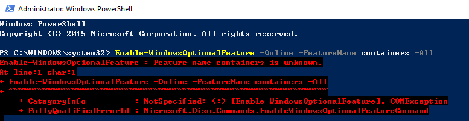
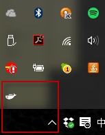
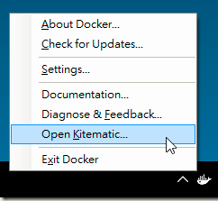

Windows總算把Container放入OS中，讓使用者不用再透過VM來使用Docker，就讓我們來學習如何設定Windows Container的環境與原生Container帶來的好處吧
Windows Container Introduction
首先，Windows Container 與先前Docker所推出的 Docker for Windows 是不一樣的東西!

Windows Container 是 Microsoft 初次在 Windows Server 2016 提供的功能，而這功能提早開放到Azure上已經一陣子了。 Microsoft 比照 Docker 的架構，開發了 Windows 版的 container engine. container 共用的是 windows kernel，不是 linux kernel.
換句話說，你在 Windows Container 內能執行的，是真真實實的 Windows Application，而不是多用一層VM包起來的LINUX Application.
Setup
Prerequisites
- One physical computer system running Windows 10 Anniversary Edition (Professional or Enterprise).
This quick start can be run on a Windows 10 virtual machine however nested virtualization will need to be enabled. More information can be found in the Nested Virtualization Guide.
You must install critical updates for Windows Containers to work. To check your OS version, run winver.exe, and compare the version shown to Windows 10 update history. Make sure you have 14393.222 or later before continuing.
因為14393.222包含在Windows 10 Creators Update Version 1607這的週年的大更新版裡面，但災情實在太可怕了…建議安裝這版要有心理準備，或是直接跳到最新的Windows 10 Creators Update Version 1703(目前僅可透過Windows update下載，尚無iso檔案)
Install Container Feature
用Administrator在PowerShell進行以下操作:
Enable-WindowsOptionalFeature -Online -FeatureName containers -All
如果先前沒安裝更新就會出現找不到指令的情況

而因為Windows 10只支援Hyper-V Containers，所以我們也要把Hyper-V打開來
Enable-WindowsOptionalFeature -Online -FeatureName Microsoft-Hyper-V -All
成功後記得將手邊檔案存檔後重啟電腦
Restart-Computer -Force
Install Docker for Windows
這邊建議大家到Docker官方直接下載Docker CE for Windows版就可以了
安裝好後會在你的右下角出現一隻鯨魚的圖示

而我們可以直接右鍵打開menu操作(如:開啟Kitermatic)

到這邊容器的環境已經準備好了，有些磁碟資料夾與網路的設定就見仁見智了，如果是新手不知道怎麼設定建議下載Kitermatic，由它來幫你完成預設與UI操作即可達到的容器使用。
Detail of Windows Container Prerequisites
附上整個完整的Windows Container Prerequisites
OS Requirements
- The Windows container feature is only available on Windows Server 2016 (Core and with Desktop Experience), Nano Server, and Windows 10 Professional and Enterprise (Anniversary Edition).
- The Hyper-V role must be installed before running Hyper-V Containers
- Windows Server Container hosts must have Windows installed to c:. This restriction does not apply if only Hyper-V Containers will be deployed.
Virtualized Container Hosts
If a Windows container host will be run from a Hyper-V virtual machine, and will also be hosting Hyper-V Containers, nested virtualization will need to be enabled. Nested virtualization has the following requirements:
- At least 4 GB RAM available for the virtualized Hyper-V host.
- Windows Server 2016, or Windows 10 on the host system, and Windows Server (Full, Core) or Nano Server in the virtual machine.
- A processor with Intel VT-x (this feature is currently only available for Intel processors).
- The container host VM will also need at least 2 virtual processors.
另外需注意的是，Windows Container 不能執行現有的 Docker Container Image。它只能執行 Windows Application，你必須準備製作或取得的Windows container image。
官方可以參考Microsoft on DockerHub，而hub.docker.com上面當然也可以找到 for windows 的 container image。
若想自己寫 dockerfile，想參考微軟官方這邊的範例的話，可以參考 Windows Container Samples。
若對Windows Container有興趣可以關注另一個台灣微軟MVP - 安德魯的部落格與粉絲團
總結
容器是未來開發跟部屬的重要一部分，也是目前整體的趨勢。如何做好CI與CD去提供一個有品質且高效彈性部屬的應用程式，這中間最重要的一塊就是容器的運用。
而針對ASP.NET Core之後的文章也會以容器為開發的主體去跟大家做分享。